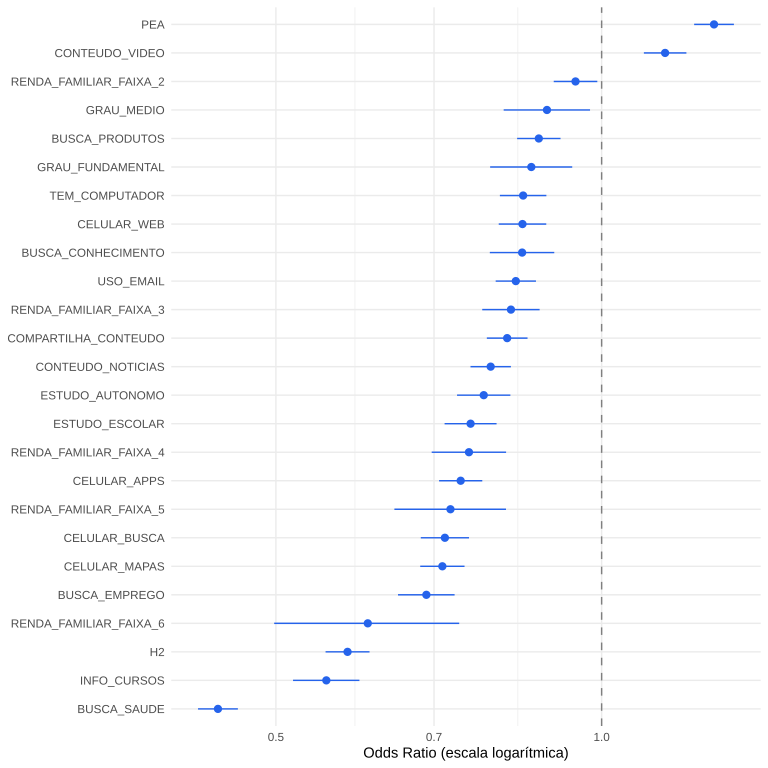
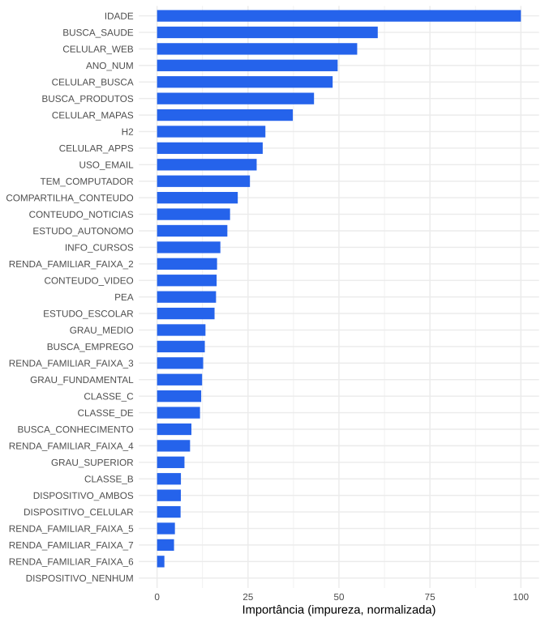

A prática digital cotidiana complementa o perfil sociodemográfico na adoção de governo eletrônico no Brasil pós-pandemia
Marcus Ramalho and Jorge Junio Moreira Antunes
Programa de Pós-Graduação em Administração, Instituto COPPEAD de Administração, Universidade Federal do Rio de Janeiro
Resumo
O uso de serviços de governo eletrônico (e-gov) no Brasil é desigual, e a literatura nacional mapeou essa desigualdade predominantemente a partir do perfil sociodemográfico do cidadão. Em paralelo, a literatura internacional sobre divisão digital aponta que, em populações com penetração ampla de internet, o que separa adotantes de não adotantes já não é apenas o acesso, mas a prática digital cotidiana. Este estudo investiga em que medida a prática digital cotidiana complementa o perfil sociodemográfico na explicação da adoção de e-gov no Brasil pós-pandemia. Replicamos e estendemos o modelo de Vargas et al. (2021) sobre dados pooled da TIC Domicílios 2021-2025 (n ≈ 70 mil), incorporando 16 variáveis de prática digital cotidiana (busca de informação, conteúdo via celular, mídia, educação e comunicação). Comparamos regressão logística e Random Forest e validamos a estabilidade temporal por holdout no ano de 2025. Os achados mostram que a prática digital cotidiana eleva o AUC do modelo de 0,77 para 0,83 (ΔAUC = +0,06) e generaliza para o ano cego (AUC = 0,835). A análise de sensibilidade com habilidades digitais autorelatadas (I1A_*) indica ganho marginal adicional, sugerindo que o conjunto de práticas já absorve a maior parte do espaço de habilidades. As implicações são teóricas (a evidência empírica brasileira corrobora o deslocamento, previsto pela literatura internacional, do acesso ao uso) e práticas (políticas de e-gov atentas à prática digital cotidiana podem ampliar a adoção sem depender exclusivamente de mudanças sociodemográficas estruturais).
Palavras-chave: governo eletrônico, prática digital, divisão digital, TIC Domicílios, regressão logística, machine learning, Brasil pós-pandemia
A prática digital cotidiana complementa o perfil sociodemográfico na adoção de governo eletrônico no Brasil pós-pandemia
Introdução
O governo eletrônico (e-gov) no Brasil cresceu em oferta na última década, mas a adesão dos cidadãos é desigual. Pesquisas brasileiras mapearam essa desigualdade pelo perfil sociodemográfico do cidadão (idade, renda, classe econômica, escolaridade, ocupação, tipo de dispositivo de acesso e uso de comércio eletrônico) (Araujo, 2018; AraujoReinhard, 2015; Vargas et al., 2021). Esses determinantes são robustos, mas explicam apenas parte da variação observada na decisão de uso.
Em paralelo, a literatura internacional sobre divisão digital evoluiu de uma visão dicotômica de acesso para um modelo multinível (Lutz, 2019): ao primeiro nível (acesso a tecnologias e infraestrutura) somam-se o segundo (habilidades e formas de uso) e o terceiro (outcomes obtidos a partir do uso). Em populações com penetração ampla de internet, evidências apontam que o que separa quem adota de quem não adota serviços digitais já não é só o acesso, mas como o cidadão usa a internet no cotidiano (Büchi; Just; Latzer, 2016; Castellacci; Tveito, 2018; Ebbers; Jansen; Deursen, 2016). No Brasil, Dodel (2023) ofereceu evidência empírica nessa direção ao mostrar, com microdados da TIC Domicílios 2019 e o framework DiSTO, que o tipo de dispositivo de acesso (computador versus apenas celular) media efeitos socioeconômicos sobre o engajamento com e-gov.
O quadro empírico brasileiro pede ampliação em três frentes complementares. A primeira é a variedade de práticas digitais cotidianas: a evidência existente concentra-se em dimensões pontuais (dispositivo, e-commerce, habilidades autorelatadas), e ainda há pouca compreensão sobre como diferentes tipos de uso da internet (busca de informação, conteúdo via celular, atividades educacionais, comunicação interpessoal) se integram para explicar a adoção de e-gov. A segunda é a janela pós-pandemia: estudos de referência (Dodel, 2023; Vargas et al., 2021) usaram microdados de 2019, e o contexto pós-pandemia (2021-2025) ainda não foi sistematicamente examinado, embora haja razões para imaginar que práticas digitais ganharam peso preditivo após a forçada digitalização de serviços públicos (Cardoso, 2020; Deursen, 2020). A terceira é a estabilidade temporal: até onde sabemos, modelos de adoção de e-gov no Brasil ainda não foram validados por holdout temporal (treinar em anos passados e testar em ano cego mais recente), o que limita a confiança em sua generalização.
Diante desse quadro, este estudo investiga: em que medida a prática digital cotidiana complementa o perfil sociodemográfico na explicação da adoção de e-gov no Brasil?
Para responder, replicamos e estendemos o modelo de Vargas et al. (2021) com 16 variáveis de prática digital cotidiana, identificadas por screening universal sobre as edições da TIC Domicílios e organizadas em cinco eixos conceituais (busca de informação, conteúdo via celular, mídia, educação e comunicação). Os modelos são treinados sobre dados pooled 2021-2025 (n ≈ 70 mil), comparando regressão logística e Random Forest para isolar o efeito do conjunto de variáveis frente ao efeito da classe de modelo. A estabilidade temporal é avaliada por holdout no ano de 2025. Análises de sensibilidade incorporam habilidades digitais autorelatadas (I1A_*, 2022-2025) e estimação ponderada com pesos amostrais (svyglm), explorando a robustez dos achados.
A construção do referencial teórico que segue foi guiada por protocolo de revisão sistemática adaptado de PRISMA-P 2015 (Shamseer, 2015), com 62 referências aceitas após três rodadas de busca, snowball backward e forward, e avaliação de qualidade em quatro dimensões. Os procedimentos detalhados estão documentados separadamente.
Referencial teórico
Adoção de tecnologia e governo eletrônico
A literatura sobre adoção de governo eletrônico ancora-se em duas tradições teóricas convergentes. A primeira é a dos modelos de aceitação tecnológica: Davis (1989) estabeleceu o Technology Acceptance Model (TAM), em que utilidade percebida e facilidade de uso percebida predizem intenção e uso; Venkatesh (2003) consolidou a Unified Theory of Acceptance and Use of Technology (UTAUT), acrescentando expectativa de desempenho, expectativa de esforço, influência social e condições facilitadoras. VanDijk (2008) estendeu a abordagem ao domínio governamental, em framework multidisciplinar que combina atributos de serviço com determinantes sociodemográficos (idade, gênero, escolaridade, ocupação) como preditores da intenção de uso.
A segunda tradição é a de public value, que desloca o foco do setor público da eficiência interna para a criação de valor relacional fora da organização (Panagiotopoulos; Klievink; Cordella, 2019). Panagiotopoulos; Klievink; Cordella (2019) argumentam que o valor público de e-gov é multidimensional e se manifesta no consumo combinado de múltiplos serviços, não em métricas técnicas isoladas. Lopes; Luciano; Wiedenhöft (2025) exploram empiricamente como prioridades rivais de public value se configuram em iniciativas brasileiras, e Macadar (2025) avançam essa agenda em direção a data justice a partir do caso do Auxílio Emergencial.
A revisão sistemática de Priyashantha; Dilhani (2022), sobre 55 estudos publicados entre 2015 e 2020, identifica como determinantes recorrentes da adoção de e-gov: utilidade percebida, facilidade percebida, confiança, risco percebido, expectativas de desempenho e esforço, influência social, condições facilitadoras, awareness, custo, satisfação e desigualdade digital. O papel mediador da confiança é consolidado em meta-análise estrutural por Hooda; Gupta; Jeyaraj (2023).
Trabalhos brasileiros precursores (Araujo, 2018; AraujoReinhard, 2015) apontaram fatores contextuais (classe social, local de acesso, competências de uso) como influenciadores da adoção, em estudos qualitativos ou de pequeno porte. Vargas et al. (2021) forneceram a primeira análise quantitativa nacional em larga escala, identificando idade, renda familiar, condição de atividade, classe econômica, escolaridade, dispositivo de acesso e uso de e-commerce como preditores significativos sobre microdados da TIC Domicílios 2019. O modelo de Vargas et al. (2021) é a referência empírica direta que o presente trabalho estende.
Divisão digital multinível
A literatura sobre desigualdade digital evoluiu de uma concepção dicotômica para um modelo de três níveis sucessivos (Lutz, 2019): acesso a tecnologias e infraestrutura, habilidades e formas de uso, e outcomes obtidos a partir do uso. VanDeursen (2018) mostram que mesmo o “primeiro nível” se sofisticou: deslocou-se de desigualdades em acesso físico para desigualdades em acesso material, isto é, na qualidade de dispositivos, planos de dados e banda.
Em países com penetração ampla, o segundo e o terceiro nível assumiram centralidade analítica. Büchi; Just; Latzer (2016), em modelo de equações estruturais sobre cinco países, encontram que variáveis sociodemográficas explicam até 50% da variância no uso da internet, com idade como preditor mais forte. Os ~50% restantes deixam espaço amplo para preditores ligados a habilidades e tipos de uso. Em países em desenvolvimento, Reisdorf (2021) documenta que estar conectado não basta: os níveis 2 e 3 do divide persistem mesmo após democratização do acesso. Lythreatis (2021), em revisão pós-pandemia, sintetiza o estado da arte e aponta direções para pesquisa futura.
No Brasil, Siqueira; Souza; Barbosa (2019) propõem um índice de digital divide entre empresas; Dodel (2023), com microdados da TIC Domicílios 2019, mostra que o dispositivo de acesso (apenas celular versus computador) tem efeito estrutural sobre o engajamento com e-gov, validando empiricamente a relevância do construto introduzido por VanDeursen (2018). Gray; Gainous; Wagner (2016) documenta o gap de gênero persistente na América Latina.
Intensidade e variedade de uso digital
Castellacci; Tveito (2018) propõem um framework teórico no qual a internet afeta outcomes via quatro canais distintos: alteração de padrões de tempo, criação de novas atividades, acesso à informação e ferramenta de comunicação. Os efeitos são mediados por características pessoais (psicológicas, capacidades, framing cultural). A heurística é clara: não é “uso de internet” em geral que importa, mas as atividades específicas combinadas com as capacidades do usuário. Park (2015) distinguem diversidade de uso (net diversity) como construto distinto da intensidade pura, sustentando que a inclusão simultânea de frequência e variedade de atividades digitais captura informação não trivial. Pearce (2019), em análise qualitativa, mostram que o efeito da educação sobre outcomes positivos da internet opera via mediadores (prática, autonomia, diversidade de uso) e não diretamente.
Roztocki (2022) documenta como pegadas digitais (digital footprints) atuam como barreira ao e-gov: cidadãos sem histórico online enfrentam dificuldades adicionais para acessar serviços, reforçando que a intensidade prévia de uso da internet condiciona a possibilidade de adesão.
Habilidades digitais e familiaridade
Ebbers; Jansen; Deursen (2016) argumentam que o impacto do digital divide sobre e-gov se expande de channel choice para channel usage: dada a presença de acesso, escolhas de canal pouco se diferenciam por habilidade, mas a intensidade e a satisfação do uso sim. A operacionalização de habilidades via experiência de uso da internet em diferentes atividades, incluindo compras online (Belanger, 2008), antecipa a estratégia metodológica adotada neste estudo, em que e-commerce (variável H2 do questionário TIC) e variáveis de uso intenso operam como proxies de familiaridade digital. Rodriguez-Hevía; Navío-Marco; Ruiz-Gómez (2020) evidenciam empiricamente a importância das habilidades digitais para o engajamento com e-gov na União Europeia.
Adoção de e-gov no Brasil
Estudos brasileiros sobre adoção de e-gov dialogam com diferentes ângulos do quadro multinível. AraujoReinhard (2015) e Araujo (2018) abriram a frente quantitativa com foco em fatores contextuais (classe, local de acesso, competências de uso). Vargas et al. (2021) forneceram a primeira análise nacional ampla com microdados da TIC Domicílios, identificando determinantes sociodemográficos significativos para 2019 e sugerindo, como direção de pesquisa futura, a inclusão de “tipos de serviço ou características de uso específicas”. Dodel (2023) respondeu parte dessa direção examinando uma dimensão de prática (dispositivo) e demonstrando seu papel mediador entre status socioeconômico e e-government engagement.
COVID-19, Auxílio Emergencial e e-gov no Brasil
Deursen (2020), em survey holandês com 1.733 respondentes, mostra que letramento, educação, atitude à internet, acesso material e habilidades digitais predizem usos e outcomes pandêmicos, enquanto recursos econômicos e sociais perdem significância após controles. A pandemia reforça desigualdades preexistentes em vez de reduzi-las via familiarização forçada. Estudos em outros países corroboram o padrão (Nguyen; Borazon, 2022).
No Brasil, Cardoso (2020) analisa o Auxílio Emergencial instituído pela Lei 13.982/2020 como caso paradigmático de “system-level bureaucracy”, em que decisões pré-programadas via algoritmos e fluxos digitais operam o serviço público em escala. O programa atendeu populações historicamente pouco familiarizadas com canais digitais, expondo limites de uma operação puramente digital sob exclusão preexistente. Trabalhos complementares (Krepsky, 2023) confirmam que a implementação do Auxílio Emergencial evidenciou cidadania digital como precondição material para a efetividade de políticas dependentes de e-gov. Santos; Bülbül; Lemes (2020), via Google Trends, sugere que o segundo nível do divide se ampliou no Brasil pós-COVID. Esses achados sustentam a relevância de uma janela 2021-2025 e da inclusão de variáveis que capturem práticas digitais cotidianas como mediadores estruturais.
Métodos
Dados
Os dados utilizados são os microdados da pesquisa TIC Domicílios, conduzida anualmente pelo Centro Regional de Estudos para o Desenvolvimento da Sociedade da Informação (Cetic.br) (Cetic.br, 2025). A análise principal cobre as edições de 2021 a 2025 em formato pooled, totalizando aproximadamente 70 mil indivíduos após filtros de elegibilidade (uso de internet nos três meses anteriores à coleta e idade igual ou superior a 16 anos, em consonância com os critérios de Vargas et al. (2021)). A edição de 2020 foi excluída em razão da impossibilidade de coleta presencial durante o pico da pandemia, que comprometeu o módulo G (governo eletrônico).
Procedimentos adicionais: a edição de 2019 foi utilizada para replicação do modelo original; as edições 2015-2018 servem como linha de base longitudinal e estão descritas no notebook técnico que acompanha o artigo. Códigos de “Não sei / Não respondeu” (97/98/99) foram tratados como ausentes nas variáveis preditoras. Para as variáveis de habilidades digitais autorelatadas (I1A_*), disponíveis a partir de 2022, “Não sei / Não respondeu” foi recodificado como ausência da habilidade (0), em consonância com a interpretação substantiva do construto.
Variáveis
A variável dependente é o uso de governo eletrônico nos 12 meses anteriores à coleta, codificada como variável binária (G1_AGREG) que agrega 29 questões do módulo G da TIC Domicílios em uma medida única de adoção, replicando o procedimento de Vargas et al. (2021).
As variáveis preditoras do modelo original (sete) replicam o conjunto utilizado em Vargas et al. (2021): idade, condição de atividade (PEA), uso de e-commerce (variável H2), renda familiar (em faixas), classe econômica (Critério Brasil), grau de instrução, dispositivo de acesso (computador, celular, ambos ou nenhum). Variáveis categóricas entram no modelo como fatores, sem assumir linearidade entre níveis.
As variáveis de prática digital cotidiana (16) são selecionadas por screening univariado sobre o conjunto de variáveis universais às dez edições da TIC Domicílios após harmonização. Cada candidata é avaliada pelo ganho marginal de AUC quando adicionada ao modelo logístico base. Foram excluídas variáveis endógenas em relação ao desfecho, isto é, as que medem busca de informação em sites governamentais (C8_F), uso de serviços públicos digitais (C8_G) e pagamentos ou transações financeiras com órgãos públicos (C8_H), por sobreposição conceitual com a variável dependente. As 16 variáveis aceitas (cada uma com ganho de +0,015 a +0,040 de AUC isoladamente) receberam nomes interpretáveis em PT-BR, organizadas em cinco eixos conceituais. A correspondência completa entre código original do questionário, nome interpretável e descrição está apresentada na Tabela 1.
Tabela 1
Variáveis de prática digital cotidiana incluídas no modelo expandido
Variável | Código TIC | Eixo | Descrição |
|---|---|---|---|
BUSCA_PRODUTOS | C8_A | Informação | Procurar informações sobre produtos e serviços |
BUSCA_SAUDE | C8_B | Informação | Procurar informações sobre saúde ou serviços de saúde |
BUSCA_EMPREGO | C8_D | Informação | Procurar emprego ou enviar currículos |
BUSCA_CONHECIMENTO | C8_E | Informação | Procurar em sites de enciclopédia (Wikipédia) |
CELULAR_BUSCA | J2_L | Conteúdo | Usar celular para buscar informações |
CELULAR_WEB | J2_J | Conteúdo | Usar celular para acessar páginas ou sites |
CELULAR_MAPAS | J2_G | Conteúdo | Usar celular para mapas |
CELULAR_APPS | J2_K | Conteúdo | Usar celular para baixar aplicativos |
CONTEUDO_VIDEO | C9_C | Conteúdo | Assistir vídeos, filmes ou séries |
CONTEUDO_NOTICIAS | C9_D | Conteúdo | Ler jornais, revistas ou notícias |
ESTUDO_ESCOLAR | C10_A | Educação | Realizar atividades ou pesquisas escolares |
INFO_CURSOS | C10_C | Educação | Buscar informações sobre cursos |
ESTUDO_AUTONOMO | C10_D | Educação | Estudar pela internet por conta própria |
COMPARTILHA_CONTEUDO | C11_A | Comunicação | Compartilhar conteúdo (textos, fotos, vídeos) |
USO_EMAIL | C7_A | Comunicação | Enviar e receber e-mail |
TEM_COMPUTADOR | B1 | Acesso | Já usou computador (mesa, notebook ou tablet) |
Modelagem
A análise comparou cinco modelos sobre o mesmo conjunto de dados pooled 2021-2025, com o mesmo N (após drop_na sobre o superset de preditores) e as mesmas folds de validação cruzada 5-fold (folds fixos para comparação pareada). Os modelos seguem uma matriz dois por dois cruzando o conjunto de variáveis (o de Vargas et al. (2021) com sete preditores; o expandido com 23 preditores, incluindo os sete do modelo de referência mais as 16 de prática digital) e a classe de modelo (regressão logística; Random Forest), acrescida de uma árvore de decisão sobre o conjunto de referência como baseline não-paramétrico simples.
A classe positiva foi fixada explicitamente como “uso de e-gov” (Sim), de modo que a sensibilidade reportada corresponde ao recall do desfecho de interesse, conforme convenção da literatura aplicada.
A estabilidade temporal foi avaliada por holdout: modelos foram treinados em 2021-2024 e testados na edição de 2025, completamente cega ao processo de estimação. A diferença de AUC entre o desempenho em validação cruzada pooled e o desempenho no ano cego operacionaliza a generalização temporal.
Duas análises de sensibilidade complementam o modelo principal. A primeira incorpora as habilidades digitais autorelatadas (variáveis I1A_, 12 itens disponíveis a partir de 2022), examinando se um construto explícito de habilidade adiciona poder explicativo às práticas digitais já incluídas no modelo expandido. Essa análise testa a hipótese teórica de Lutz (2019) e Deursen (2020) de que habilidades digitais constituem mediador estrutural. A segunda é uma estimação ponderada por pesos amostrais da TIC Domicílios via svyglm* (Gao; Schneider; Kolenkikov, 2026), comparando os coeficientes ponderados com os não ponderados para verificar a robustez dos efeitos a desvios da amostragem complexa.
Pacotes computacionais
Toda a análise foi conduzida em R (R Core Team, 2026), com os pacotes tidyverse (Wickham, 2023) para manipulação de dados, haven (Wickham; Miller; Smith, 2025) para leitura de microdados em formato SPSS, caret (Kuhn, 2024) para a infraestrutura de validação cruzada com folds fixos, ranger (Wright, 2026) para Random Forest, rpart e rpart.plot (Milborrow, 2026; Therneau; Atkinson, 2026) para árvore de decisão, pROC (Robin et al., 2025) para curvas ROC e cálculo de AUC, broom (Robinson; Hayes; Couch, 2025) para tidying de coeficientes, survey (Gao; Schneider; Kolenkikov, 2026) para estimação ponderada, doParallel (Corporation; Weston, 2022) para paralelização das folds e knitr (Xie, 2025) para integração com o documento. O documento final foi compilado com Quarto (Posit Software, PBC, 2024).
Resultados
Estatísticas descritivas
A amostra pooled 2021-2025 totaliza 68.933 indivíduos elegíveis após filtros. A variável dependente (uso de e-gov nos 12 meses anteriores à coleta) apresenta proporção positiva próxima a 0% no período, com tendência de leve crescimento ao longo dos anos analisados.
Replicação de Vargas et al. (2021) em 2019
Antes da análise principal, o modelo de Vargas et al. (2021) foi replicado sobre microdados de 2019 isoladamente para validação. Os indicadores de desempenho obtidos (Accuracy, F1, Recall, Precision) reproduzem aproximadamente os reportados pelos autores originais, confirmando a robustez do procedimento de harmonização e codificação utilizado neste estudo.
Modelo expandido: prática digital complementa o perfil sociodemográfico
A Tabela 2 apresenta os cinco modelos avaliados sobre o pooled 2021-2025 com folds fixos:
Tabela 2
Desempenho dos modelos: matriz GLM/RF × Original/Expandido + Árvore (CV 5-fold; N comum)
Modelo | Variáveis | N | AUC | Recall | Especif. | Precisão | F1 |
|---|---|---|---|---|---|---|---|
GLM Original | Vargas (7) | 68.933 | 0.767 | 0.818 | 0.540 | 0.753 | 0.784 |
GLM Expandido | Vargas + 16 (23) | 68.933 | 0.831 | 0.836 | 0.649 | 0.803 | 0.819 |
Árvore | Vargas (7) | 68.933 | 0.740 | 0.816 | 0.536 | 0.751 | 0.782 |
RF Original | Vargas (7) | 68.933 | 0.770 | 0.828 | 0.525 | 0.749 | 0.787 |
RF Expandido | Vargas + 16 (23) | 68.933 | 0.830 | 0.854 | 0.618 | 0.793 | 0.822 |
A leitura central é direta: o modelo expandido (sete variáveis sociodemográficas mais 16 de prática digital) eleva o AUC do modelo logístico de 0.767 para 0.831 (ΔAUC = +0.063), com aumento simultâneo de recall, especificidade, precisão e F1. A leitura específica nas dimensões de classe de modelo e conjunto de variáveis aponta dois resultados:
- A prática digital complementa substancialmente o perfil sociodemográfico: os ganhos de AUC entre os modelos Originais e Expandidos são de +0.063 para a regressão logística e +0.060 para o Random Forest. Em ambos os casos, o ganho é da ordem de seis pontos de AUC, reproduzindo o efeito independentemente da classe de modelo.
- A escolha entre regressão logística e Random Forest, sobre o mesmo conjunto de variáveis, produz AUCs equivalentes: ΔAUC entre RF e GLM, sobre o conjunto Original, é de +0.003; sobre o conjunto Expandido, -0.001. O ganho preditivo do modelo expandido é praticamente todo atribuível ao conjunto de variáveis, não à flexibilidade da classe de modelo.
A Figura 1 apresenta os odds ratios das variáveis significativas no GLM Expandido, com intervalos de confiança a 95% e eixo logarítmico. Variáveis de prática digital com ORs mais altos incluem BUSCA_SAUDE, INFO_CURSOS, CELULAR_MAPAS e CELULAR_APPS, indicando que práticas associadas à busca de informação especializada e ao uso ativo do celular são as que mais elevam a chance de adoção, controlado o perfil sociodemográfico.
Figura 1
Odds ratios das variáveis significativas no GLM Expandido (eixo x em escala logarítmica)

A Figura 2 apresenta a importância relativa das variáveis no Random Forest Expandido (medida de impureza Gini, normalizada). A ordenação confirma o padrão observado nos odds ratios da regressão logística: variáveis de prática digital ocupam as primeiras posições, com BUSCA_SAUDE no topo, seguida por idade e variáveis de uso intenso de celular e de informação. A coerência entre os dois métodos sobre o mesmo conjunto de variáveis reforça que o sinal preditivo está nas variáveis, não no modelo.
Figura 2
Importância das variáveis no Random Forest Expandido (impureza Gini, normalizada)

Generalização temporal: holdout em 2025
Para verificar a estabilidade dos efeitos estimados, os modelos foram retreinados em 2021-2024 e testados na edição de 2025 cega ao processo de estimação. A Tabela 3 apresenta os resultados.
Tabela 3
Desempenho dos modelos no holdout temporal (treino 2021-2024; teste na edição 2025)
Modelo | AUC | Recall | Precisão | F1 |
|---|---|---|---|---|
GLM Original | 0.772 | 0.649 | 0.841 | 0.732 |
GLM Expandido | 0.835 | 0.680 | 0.882 | 0.768 |
RF Original | 0.767 | 0.653 | 0.833 | 0.732 |
RF Expandido | 0.829 | 0.726 | 0.863 | 0.789 |
O AUC do GLM Expandido em 2025 cego é de aproximadamente 0,835, ligeiramente superior ao AUC obtido em validação cruzada pooled (0,831). A diferença é de magnitude desprezível, sugerindo que os efeitos estimados não dependem de particularidades dos anos de treino e generalizam para o ano subsequente.
Sensibilidade: habilidades digitais e estimação ponderada
Duas análises complementam o achado principal.
A primeira inclui as 12 variáveis de habilidades digitais autorelatadas (I1A_) sobre os anos de 2022-2025 (n ≈ 56 mil), em que as variáveis estão disponíveis. O AUC do GLM expandido sem I1A_ sobre essa subamostra é de aproximadamente 0,831; com I1A_, sobe para 0,839 (ΔAUC = +0,008). O Random Forest com I1A_ atinge AUC de 0,842 (ΔAUC = +0,010 sobre o RF expandido sem I1A_*). O ganho marginal pequeno indica que as 16 práticas digitais incluídas no modelo expandido já absorvem a maior parte do espaço de habilidades, leitura coerente com a noção teórica de familiaridade digital (Ebbers; Jansen; Deursen, 2016; Lutz, 2019), em que prática frequente e variada converge funcionalmente com habilidades autorelatadas.
A segunda análise estima o GLM Expandido com pesos amostrais da TIC Domicílios via svyglm, comparando os coeficientes ponderados com os não ponderados. Os coeficientes das 16 variáveis de prática digital mantêm sinal e significância em ambas as estimações; a diferença mediana em log-odds entre as duas estimativas é da ordem de 0,03 em valor absoluto. Algumas variáveis sociodemográficas (CLASSE_CB e níveis de C5_DISPOSITIVOS) perdem significância na estimação ponderada, mas o efeito principal das variáveis de prática digital permanece robusto. O resultado valida o uso da estimação não ponderada como modelo principal sem prejuízo substancial.
Discussão
A prática digital cotidiana complementa o perfil sociodemográfico
O resultado principal, isto é, o ganho de AUC de aproximadamente seis pontos com a inclusão das 16 variáveis de prática digital cotidiana, oferece evidência direta de que a prática digital complementa, em vez de substituir, o perfil sociodemográfico na explicação da adoção de e-gov no Brasil. As variáveis sociodemográficas tradicionais permanecem com efeitos estatisticamente significativos no modelo expandido, mas seu poder explicativo é incrementado pela inclusão de práticas específicas. O resultado é coerente com a previsão teórica de Büchi; Just; Latzer (2016) de que sociodemográficas explicam até cerca de metade da variância no uso da internet em populações com acesso amplo, deixando espaço para preditores ligados a habilidades e tipos de uso. Em terreno brasileiro, esse “espaço de variância” começa a ser preenchido empiricamente com a evidência aqui reportada.
A coerência entre os odds ratios da regressão logística e a importância relativa das variáveis no Random Forest, ambos identificando práticas digitais como preditores principais, sugere que o efeito é estrutural (i.e., atribuível ao conjunto de variáveis) e não dependente da classe de modelo escolhida. A Figura 1 e a Figura 2, comparadas, mostram convergência substantiva sobre quais práticas mais pesam na adoção: busca de informação especializada (saúde, cursos), uso ativo do celular para mapas e apps, e atividades educacionais.
Diálogo cumulativo com Vargas et al. (2021) e Dodel (2023)
Esta análise estende o trabalho de Vargas et al. (2021) em duas direções complementares. Na primeira, atende a uma sugestão explícita dos próprios autores em suas considerações finais (testar características de uso específicas além da agregação adotada para a variável dependente), incorporando 16 dimensões de prática digital cotidiana. Na segunda, amplia a janela temporal de uma única edição (2019) para o pooled 2021-2025, captando o contexto pós-pandemia, em que práticas digitais ganharam centralidade frente a serviços tradicionais.
Dodel (2023) abriu, no Brasil, a frente empírica de “prática digital media o efeito do perfil socioeconômico” ao examinar o dispositivo de acesso (computador versus apenas celular) com microdados da TIC Domicílios 2019 e o framework DiSTO. Nossa análise complementa essa contribuição cumulativa em três aspectos: (i) examina uma variedade ampla de práticas digitais cotidianas, não restrita ao dispositivo; (ii) cobre janela longitudinal pós-pandemia; (iii) avalia estabilidade temporal por holdout em ano cego. A leitura conjunta dos achados aponta para um quadro coerente: o uso da internet pelo cidadão, seja medido pelo dispositivo, seja pela variedade de atividades específicas, opera como camada estruturante da adoção de e-gov no Brasil, complementando os efeitos do perfil sociodemográfico mapeados pela literatura anterior.
Familiaridade digital como construto
A análise de sensibilidade com habilidades digitais autorelatadas (I1A_*) traz uma evidência conceitual relevante. O ganho marginal de AUC ao incluir habilidades é da ordem de 0,008 a 0,010, modesto frente ao ganho de seis pontos das 16 práticas. Uma leitura coerente com a literatura é a de familiaridade digital como construto convergente: prática frequente e variada da internet aproxima-se funcionalmente do conceito de habilidade autorrelatada, isto é, quem realiza atividades digitais cotidianas reporta-se mais hábil, e o conjunto de práticas observadas captura grande parte do que a autorrelato de habilidades adicionaria como informação. Esse é o sentido em que Ebbers; Jansen; Deursen (2016) falam do deslocamento “de channel choice para channel usage”: é o uso, e não a posse de habilidade declarada, que diferencia adoção quando há acesso.
Pandemia, Auxílio Emergencial e implicações para o Brasil
A janela 2021-2025 capta o contexto pós-pandêmico, em que o Auxílio Emergencial e a transformação digital de outros serviços públicos forçaram o engajamento de populações historicamente menos familiarizadas com canais digitais. Cardoso (2020) caracteriza esse momento como exemplo de “system-level bureaucracy”, em que decisões pré-programadas via algoritmos passaram a operar serviços públicos em escala. A leitura empírica que esta análise oferece complementa o relato qualitativo: o conjunto de práticas digitais mantém papel central na adoção de e-gov mesmo após o salto na oferta digitalizada, e os efeitos estimados são estáveis temporalmente. A pandemia, em vez de reduzir a importância da prática digital cotidiana (pela hipótese de familiarização forçada), parece ter reforçado seu papel preditivo, em consonância com o achado de Deursen (2020) em contexto holandês.
Implicação metodológica
Um achado secundário, mas relevante para a prática de pesquisa empírica em e-gov, é a equivalência de desempenho entre regressão logística, Random Forest e árvore de decisão sobre o mesmo conjunto de variáveis. As três técnicas, sobre os preditores expandidos, atingem AUC praticamente idêntico (cerca de 0,83). A leitura correta não é “o método não importa em geral”, mas sim que, para este desfecho com este conjunto de preditores, o sinal preditivo é majoritariamente linear no espaço ampliado. A escolha entre métodos pode então ser orientada por critérios de interpretabilidade (favorecendo a regressão logística, que oferece odds ratios diretamente comparáveis com a literatura tradicional) sem prejuízo de poder preditivo. Essa observação é coerente com o que Browne; Matteson; McBride (2021) e Sohnesen; Stender (2017) encontraram em domínios distintos (pobreza, malnutrição) e dialoga com o debate sobre quando machine learning mais flexível agrega valor frente a modelos lineares tradicionais.
Limitações
Quatro limitações merecem registro. Primeira, a estimação principal não incorpora pesos amostrais; a análise de sensibilidade via svyglm indica robustez dos efeitos das variáveis de prática digital, mas a generalização para a população brasileira como um todo deve considerar a estrutura amostral complexa da TIC Domicílios. Segunda, o desfecho G1_AGREG é uma agregação binária de 29 questões; uma análise de sensibilidade desagregada por tipo de serviço (declaração de imposto, agendamento médico, matrícula escolar) seria informativa, mas excede o escopo deste artigo. Terceira, a edição de 2025 incluiu uma nova questão sobre serviços de Justiça (G1_H), o que pode inflacionar levemente a proporção de uso comparativamente aos anos anteriores. Quarta, a relação entre perfil sociodemográfico e prática digital (adição, mediação, moderação) não foi formalmente decomposta por análise de mediação. A literatura indica que mediação é provável (Dodel, 2023), e o teste rigoroso desse mecanismo permanece como direção promissora para pesquisa futura.
Conclusão e implicações
Este estudo investigou em que medida a prática digital cotidiana complementa o perfil sociodemográfico na explicação da adoção de governo eletrônico no Brasil pós-pandemia. Os achados apontam para uma resposta clara: a prática digital adiciona substancialmente ao poder explicativo do perfil sociodemográfico, com ganho de aproximadamente seis pontos de AUC sobre o modelo de Vargas et al. (2021) e estabilidade temporal validada por holdout em 2025.
Em termos teóricos, a contribuição é a de oferecer evidência empírica brasileira para o deslocamento conceitual, previsto pela literatura internacional de divisão digital, do plano do acesso ao plano do uso. As 16 dimensões de prática digital cotidiana operam como construto coerente, coerente com a noção de familiaridade digital, e ocupam parte expressiva do “espaço de variância” deixado pelas variáveis sociodemográficas tradicionais.
Em termos práticos, o achado tem implicações para políticas de e-gov: ampliar a adoção depende não apenas de políticas redistributivas que alterem o perfil sociodemográfico (renda, escolaridade), mas também de iniciativas que estimulem práticas digitais cotidianas, como letramento digital aplicado, ofertas de informação online em domínios como saúde e educação e integração de serviços com aplicativos móveis comuns. A pandemia mostrou que a aceleração da oferta digital, isoladamente, não basta: é a familiaridade do cidadão com práticas digitais cotidianas que viabiliza a apropriação dos serviços.
Direções para pesquisa futura incluem o teste formal de mediação entre perfil sociodemográfico, prática digital e adoção de e-gov; a análise desagregada por tipo de serviço público; e a comparação com países latino-americanos com microdados similares, em diálogo com a agenda de Gray; Gainous; Wagner (2016) e Reisdorf (2021).
Referências
Apêndice
Código central de treinamento dos modelos
O treinamento dos modelos foi realizado em três scripts standalone (scripts/fit_ml.R, scripts/fit_i1a.R e scripts/fit_svyglm.R), com saída em arquivos RDS lidos por este artigo. Reproduzem-se a seguir os trechos centrais para fins de transparência metodológica; o código completo está disponível no notebook técnico que acompanha o artigo.
scripts/fit_ml.R (excerto)
# Variáveis do artigo de referência (Vargas et al., 2021)
vars_art <- c("IDADE", "PEA", "H2", "RENDA_FAMILIAR", "CLASSE_CB",
"GRAU_INSTRUCAO", "C5_DISPOSITIVOS")
vars_categoricas <- c("RENDA_FAMILIAR", "CLASSE_CB", "GRAU_INSTRUCAO",
"C5_DISPOSITIVOS")
# 16 variáveis de prática digital cotidiana (selecionadas por screening)
# Códigos TIC originais renomeados em scripts/var_labels.R para nomes
# interpretáveis (BUSCA_SAUDE, CELULAR_MAPAS, ESTUDO_AUTONOMO, ...)
source("scripts/var_labels.R")
# Folds fixos para comparação pareada entre modelos
folds <- caret::createFolds(df$egov, k = 5, returnTrain = TRUE)
ctrl <- caret::trainControl(method = "cv", number = 5, index = folds,
classProbs = TRUE,
summaryFunction = caret::twoClassSummary,
savePredictions = "final")
# Cinco modelos sobre o mesmo N e mesmas folds
glm_orig <- caret::train(egov ~ ., data = df_orig, method = "glm",
family = "binomial", trControl = ctrl, metric = "ROC")
glm_exp <- caret::train(egov ~ ., data = df_exp, method = "glm",
family = "binomial", trControl = ctrl, metric = "ROC")
tree <- caret::train(egov ~ ., data = df_orig, method = "rpart",
trControl = ctrl, metric = "ROC")
rf_orig <- caret::train(egov ~ ., data = df_orig, method = "ranger",
trControl = ctrl, metric = "ROC",
num.trees = 300, num.threads = 1)
rf_exp <- caret::train(egov ~ ., data = df_exp, method = "ranger",
trControl = ctrl, metric = "ROC",
num.trees = 300, num.threads = 1)scripts/fit_i1a.R (excerto)
# Habilidades digitais autorelatadas (12 itens, disponíveis a partir de 2022).
# "Não sei / Não respondeu" (códigos 97/98/99) é tratado como ausência da
# habilidade (0), evitando perda massiva de N por drop_na.
vars_i1a <- c("I1A_A","I1A_B","I1A_C","I1A_D","I1A_E","I1A_F",
"I1A_G","I1A_H","I1A_I","I1A_J","I1A_K","I1A_L")
recode_hab <- function(x) {
x <- as.numeric(x)
x[x %in% c(97, 98, 99)] <- 0
x
}
pool <- pool |>
mutate(across(all_of(vars_i1a), recode_hab))